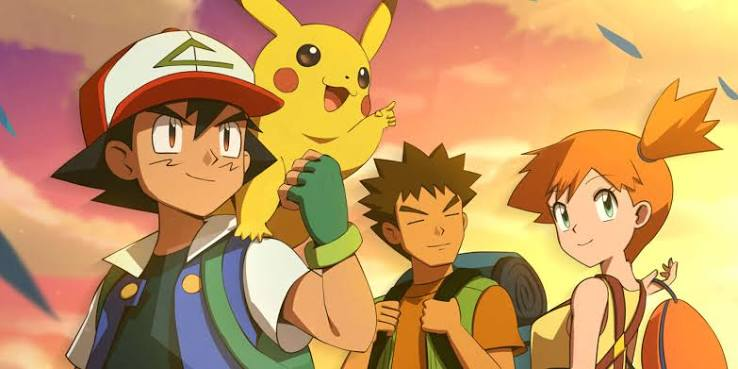

Cartoon Network
Pokémon: Indigo League
"Gotta Catch 'Em All! 150 Pokémon in the Kanto Region."
From leaving Pallet Town on bicycle with an uncooperative Pikachu to the Indigo Plateau tournament, Ash’s journey redefined playground culture with Cheetos Tazo discs and sticker albums.